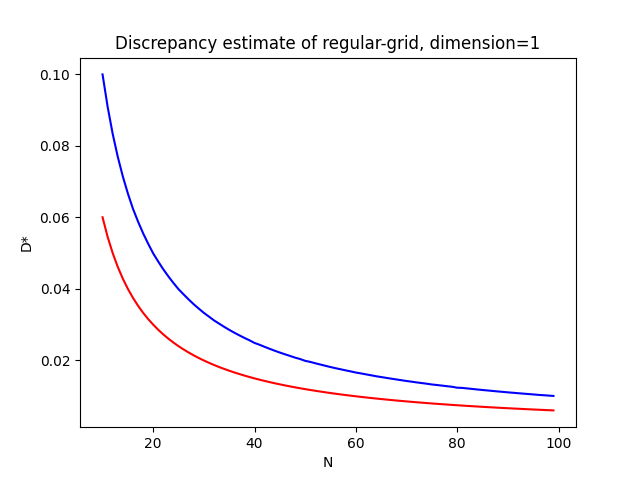
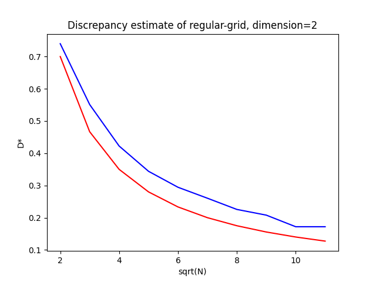
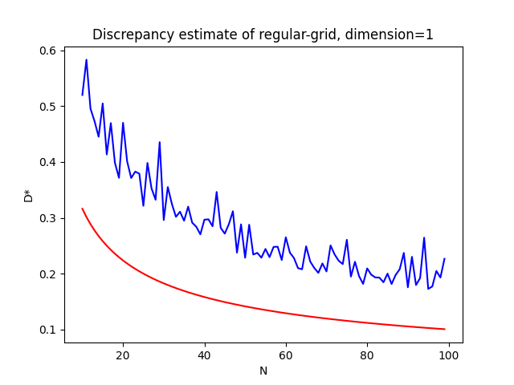
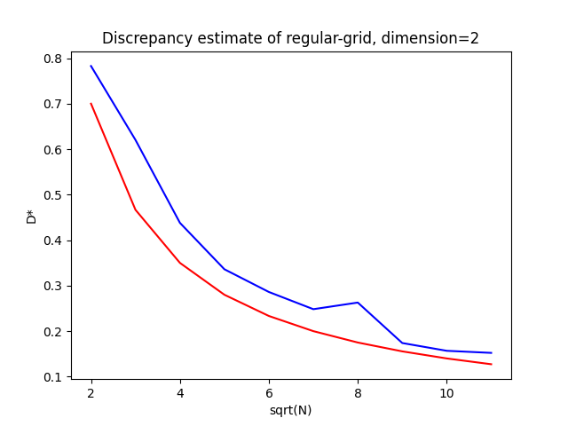
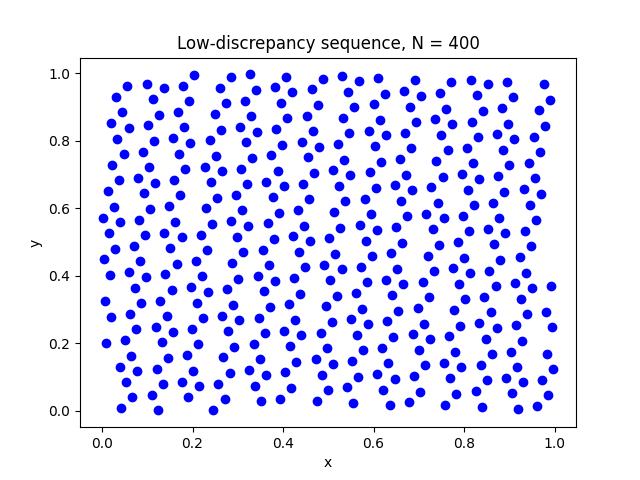
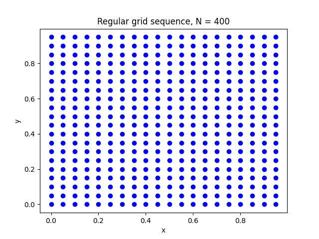
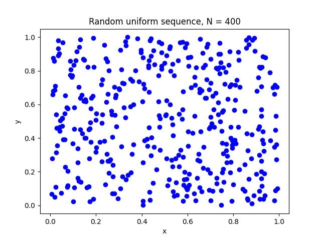

We summarize the so-called Randomized Quasi Monte-Carlo method to estimate integrals of the kind $$\int_{[0,1]^d} f(x)\,dx .$$ We briefly discuss how to apply the method to evaluate integrals, and we give an elementary implementation in C.
It is well-known that the integral of a function (geometrically, the area enclosed below the graph) can be linked with the average value of that function on the interval, through the formula $$\frac{1}{b - a}\int_a^b f(x)\,dx$$ This motivates the approximation of the integral by a sampling process: $$\int_a^b f(x)\, dx \sim \frac{b-a}{N}\ \sum_{1\leq n\leq N} f(x_n) ,$$ where $x_1,\dots,x_N$ is an equidistant sampling of $[a,b]$.
When the sampling is chosen through the standard process $x_i=a+i(b-a)/N$ (which we will refer to as regular grid), the above method is roughly equivalent to a Darboux sum. This method gives bad performance in general. Roughly speaking, there are (at least) two directions to generalize Darboux summation process:
Monte-Carlo methods follow the second approach, while techniques like spline interpolation follow the first idea. Both enjoy advantages and suffer from disadvantages as well.
In this text, we take the function $$f: [0, 1]^3 \to \mathbb{R} : f(x,y,z) = \sin\Big(\frac{1}{y}\Big) + \frac{1}{\sqrt[3]{x+z}} $$ as a model example. (This function is ill-defined at $0$ but we do not really care, as the domain on which it happens is negligeable for the integral.) The exact value has been estimated at $1.56139$ by a confident-source (aka WolframAlpha).
The reader should be warned that we are going to assimilate $[0,1]$ and $[0,1)$ quite often, as the difference is a domain of null measure, and therefore does not enter into account in any reasonnable integration theory. We skip the details.
Before introducing Monte-Carlo methods, we first review the basic idea of drawing a regular grid (splitting the domain in equal subparts) and picking one point per subdivision.
The idea of the method per se is not bad. As we refine the size of the grid, we create more and more points, uniformly in the domain. The normalisation ratio behaves as the volume measure of each subdivision and, asymptotically, we expect the convergence to the real integral to occur. In fact, there exists a theorem from de Bruijn and Post that would be phrased as stating that if a function $f$ is not Riemann integrable, it is because one can find a uniform sampling of the domain for which the averages do not converge. This result is interesting because it shows that for the integration-by-sampling process to converge, in the end it is sufficient to exhibit a sampling with some asymptotic invariance through translations. It is possible to exhibit many constructions of those samplings, and in practice, the regular grid turns out to be quite a bad one!
As an illustration, the following code performs a subdivision of the cube into a total of $2^{24}$ subcubes, and uses the partition to estimate the integral of our model function:
const size_t N = 1 << 8;
double estimate = 0;
double point[3];
size_t count = 0;
for(size_t i = 0; i < N; i++)
for(size_t j = 0; j < N; j++)
for(size_t k = 0; k < N; k++) {
point[0] = i * 1.0/N;
point[1] = j * 1.0/N;
point[2] = k * 1.0/N;
count += 1;
estimate += (f(3, point) - estimate) / count;
}
In the above snippet, we have used an iterative method to update the estimate. We discuss this point later on in the text.
As a matter of fact, the C codes we present are using the type abstraction
typedef double (RQMC_integrable_function)(const size_t d, const double[d]);The result is $1.540790$ instead of the reference estimate $1.56139$. As one can see, the error is quite big, compared to the big amount of points we used. Darboux sums is not performant enough.
The problem we have above, is that our regular grid introduces what we can an aliasing. This is a source of error that occurs when the typical oscillation of what we measure are too high compared to the «wave-length», so to say, of the renderer/measurement. This is somehow what happens here: the function terribly misses the high oscillation of the sine, and is also likely to under-estimate the blow-up of the second term.
Those phenomenon seem to be well-known from graphical engines where aliasing is a visual effect that one tries to avoid very hard. The idea of standard Monte-Carlo method is to remove the aliasing caused by the regular grid, and introduce noise instead. Formally, it is all about dropping the regular grid away, and sampling the cube with a uniform random variable.
The following C code demonsrates the idea, using the same total number of points, but chosen randomly.
const size_t N = 1 << 24;
double estimate = 0;
double point[3];
for(size_t k = 0; k < N; k++) {
point[0] = uniform_random_generator();
point[1] = uniform_random_generator();
point[2] = uniform_random_generator();
estimate += (test_cesaro_average_f(3, point) - estimate) / (k+1);
}
| Reference | Regular Grid | Random Uniform |
|---|---|---|
| $1.56139$ | $1.540790$ | $1.561395$ |
| $95\%:[1.561067, 1.561724]$ |
Intuitively, what happens is that we replaced the regular grid by a randomly chosen sample in the cube.
The distribution probability is a uniform over the cube $\mathcal{U}\big([0,1]^3\big)$.
It is obvious that is it not exactly random, but more likely pseudo-random. As a matter of fact, the C code behind
the method uniform_random_generator is
static inline double uniform_random_generator() { return (double)rand() / RAND_MAX; }The issue with random uniform generator, is that the confident interval is quite large. For $2^{24}$ sample size, we would like a more accurate prediction. We will discuss later on how to compute confidence intervals and related topics. For now, we focus on the idea about how fast is the estimator converging to the integral, and we wish to improve that.
It turns out that those questions are widely studied from different fields of mathematics, and are based on the idea of discrepancy: $$D^\star_N = \sup_{J\in\mathcal{J}}\Bigg\{ \frac{\sharp\{n:x_n\in J\}}{N} - \textrm{vol}(J) \Bigg\} .$$ Phrase explicitly, the (star)-discrepancy corresponds to the idea of computing the difference between volumes of intervals $J$ and the ratio of points in the sequence $x_1,\dots,x_N$ falling into $J$. The supremum is computed on the collection $\mathcal{J}$ of rectangles of the form $$[0, a_1)\times\dots\times [0, a_d)$$ for convenience. This is no real issue in practice, because we expect the sampling to have some asymptotic invariance property with respect to translations.
The discrepancy is a measure of a difference between the geometric volume and the density of the cloud of points. It has a direct connection with integral estimation, via the Koksma-Hlawka inequality: $$\Bigg| \frac{1}{N}\sum_{1\leq n\leq N}f(x_n) - \int_{[0,1]^d} f(x)\, dx \Bigg| \leq D^\star_N\ \mathcal{V}(f) ,$$ (see also [here] and references therein), where $\mathcal{V}(f)$ is a measure of the variation of $f$.
At least theoretically, having a vanishing discrepancy makes the estimator converge to the correct value of the integral. This reason is roughly why refining a regular grid, or increasing the sample size of a uniform sample, will always asymptotically yield a faithful approximation of the integral. However, in practice, those two methods (regular grid and uniform Monte-Carlo) are way too slow: the convergence is not fast enough. Phrased differently: the discrepancy associated to those sampling strategies is too high.
Can we make that explicit? For a regular grid, estimating the discrepancy is quite straightforward in Python
def diff(a, N):
points = (i/N for i in range(0, N))
density = sum((1 for x in points if x < a)) / N
return abs(density - a)
def discrepancy(N, e):
return max((diff(i/e, N) for i in range(0, e)))
xs = [i for i in range(10, 100)]
ys = [discrepancy(N, 10000) for N in xs]


In the graphs above, the red curves are the model curves of $N\mapsto 1/N$ and $N\mapsto 1/\sqrt{N}$,
respectively; while the blue curves are the trends of $D^\star_N$. To give a taste about what happens in higher dimensions,
we quote without proof that we usually have
$$D^\star_N \sim \mathcal{O}\Big(\frac{1}{N^{1/d}}\Big) .$$
This asymptotic growth is often referred to as the dimensionality curse, and gets interpreted as stating that
the expected amount of points in the sampling to achieve the same error rate, is exponential in the dimension.
This is a big issue in practice, and it can hardly be achieved by turning the accuracy of the approximation (via trapezoids or splines),
as those methods are not enough to fight a high dimension setting (say, $\textrm{dim}=10$), or start to be quite costly.
In addition, we still have the moral issue that relying on smoother approximations of $f$ require $f$ to be smoother, which in practice
might be an issue.
Let us try to estimate what happens for the Monte-Carlo process. As we have seen, Monte-Carlo sampling follow the same idea, but choose point randomly and uniformly in the domain. We can also compute the discrepancy of such sampling (which is now a random variable as well, although we can hope for some convergence).


In the graphs above, the red curves are the model curves of $N\mapsto 1/\sqrt{N}$ in both cases.
What we observe is that compared to the regular grid, it seems like the one-dimensional case is worst than before, and
no performance gain happens for the two-dimensional case. In fact, it is perfectly expected from the Central Limit Theorem
of probability theory: in the case of a sampling made of independent and identically distributed individuals:
$$D^\star_N \sim \mathcal{O}\Big(\frac{1}{\sqrt{N}}\Big) $$
with probability $1$; and this estimate does not depend on the dimension! This is an interesting improvement for high dimensions,
and it explains already why our Monte-Carlo approach gave a better result than the regular three-dimensional grid.
A natural question arise: can we improve further? Is it possible to do better than a uniform sampling of the domain and improve the convergence rate of the integral? The answer is yes.
It is conjectured that the optimal rate of convergence for the star-discrepancy is $$\mathcal{O}\Big( \frac{(\log(N))^{d-1}}{N} \Big)$$ The conjecture, or variations of it, has been proved in some cases. In dimension $1$, the regular grid already achieves the minimum, which morally means that it is optimal. In dimension $2$, both Monte-Carlo and regular grid are sub-optimal, and same goes for higher dimensions.
A sequence of low-discrepancy is a sequence that achieves the minimal bound, asymptotically. There exists quite a few constructions of those sequences, that are all deterministic and more or less efficient. The idea is always to arrange the points in the domain in such a way that they are better spread in the space, covering it with more accuracy.
A simple example of low-discrepancy sequence is the Kronecher sequence with golden ratio: $$x_n = n * \Big(\frac{\sqrt{5} - 1}{2}\Big)\quad \textrm{mod}\ 1.0$$ but other constructions based on prime numbers are possible. The constructions are often quite complex and beyond the scope of this short summary.
In the remaining part of the implementations, I've used a new construction found
[here].
You can have a insight of the sequence in dimension 2 in the below picture
(we have included a sketch of the regular grid and the uniform distribution too):



The reader can directly observe that low-discrepancy sequences indeed tend to better
sample the domain. The implementation roughly consists in constructing a iterated vector
$$x_n = n * \big( \phi, \phi^2, \dots, \phi^d \big) \quad \textrm{mod}\,1.0^d,$$
where $\phi$ is a magic irrational number that makes the sequence well-behaving.
The interested reader can also checkout the Jupyter Notebook for interactive examples in 3-dimensions
(or the HTML-export).
The process of sampling with respect to a deterministic sequence of low-discrepancy, is known as Quasi Monte-Carlo integration.
Quasi Monte-Carlo integrals converge fast. As we have seen, this is due to the near-optimal discrepancy of the sequence. In practice, they are not always cheap to compute, but they are deterministic, which means they can be cached. They also enjoy incremental stability, in the sense that computing the sequence up to $N+1$ does not change the previously computed $N$ points.
However, for some reasons, they are also not so convenient. The main point of struggle is the error estimate, which is very hard in practice. Indeed, the Koksma-Hlawka inequality is often unusable to estimate the error, because the variance of $f$ is often too high or infinite. Using this inequality as a way to estimate the error, would yield to astonishingly high confidence intervals that are not even faithful. The inequality is actually over-estimating the error.
To overcome this issue, people got inspired by the Monte-Carlo process per se. In that process, the error estimate has nothing to do with Koksma-Hlawka inequality, but rather rely on the Central Limit Theorem, which is actually quite general and does not invole the variation of $f$. This yields to the notion of Randomized Quasi Monte-Carlo integration technique.
The idea is to create a mixin between low-discrepancy deterministic choices, and uniform random ones. The technique is discussed in the section below.
The main idea is to consider the quasi-Monte-Carlo estimator: $$S_N = \frac{1}{N}\sum_{1\leq n\leq N} f(x_n) ,$$ and introduce a random shift: $$S_N(U) = \frac{1}{N}\sum_{1\leq n\leq N} f(x_n + U) .$$ The $+$ here above is made modulo $1.0$, whatever that could mean to you.
From a mathematical point of view, we can observe that each of the random variables $U_n:=(x_n+U)\ \textrm{mod}\ 1.0$ are uniformly distributed on $[0,1)^d$. Therefore, we can easily compute, with elementary probability theory: $$\mathbb{E}[S_N(U)] = \frac{1}{N}\sum_{1\leq n\leq N} \mathbb{E}[f(U_n)] = \frac{1}{N}\sum_{1\leq n\leq N} \int_{[0,1)^d}f(u)\, du = \int_{[0,1)^d}f(x))\, dx .$$ and therefore our estimator $S_N(U)$, as an estimator for the integral, is unbaised (the expected value equals the number we seek to estimate).
Knowing this, we expect from the Central Limit Theorem $$\frac{\sqrt{M}}{\sigma} \Bigg( \frac{1}{M}\sum_{1\leq m\leq M} S_N(U_m) - \int_{[0,1]^d} f(x)\, dx \Bigg) \sim \mathcal{N}(0, 1) \quad \textrm{as}\ M\to +\infty,$$ where $\mathcal{N}(0,1)$ denotes the standard normal distribution, and $$\bar{S}_N(U) = \frac{1}{M} \sum_{1\leq m\leq M} S_N(U_m)$$ is the estimateur for the average (that is expected to be asymptotically the integral we seek to compute). In practice, we do not know about $\sigma^2$ (the real variance for the random variable $S_N(U)$), as we do not know the exact asymptotic distribution of $S_N(U)$. It is however standard to estimate the variance through the estimator $$\frac{1}{M-1}\sum_{1\leq m\leq M}\big(S_N(U_m) - \bar{S}_N(U)\big)^2 .$$ We discuss that part later on.
This discussion is somehow equivalent to what happens for Monte-Carlo integration. The difference is that our estimators $S_N(U)$ has been tuned with a low-discrepancy sequence. It can be thought of as a bootstrap method: instead of taking the average over random uniforms, we boost each of them by $N$-replicas, shifted through a sequence that covers the domain very well. As such, randomized quasi Monte-Carlo looks like a variance reduction technique for Monte-Carlo method.
The C header file we wish to implement reads as
struct RQMC_IntegralResult
{
const double estimate;
const double sq_error;
};
/*
Random Quasi Monte-Carlo integral
*/
struct RQMC_IntegralResult RQMC_integral(
/* The function to integrate on [0, 1) */
RQMC_integrable_function f,
/* The domain dimension */
const size_t dimension,
/* The maximal points in the low-discrepancy sequence to be computed */
const size_t discrepancy_strength,
/* The number of random measurements */
const size_t measurements_count
);
We will rely on two elementary number generators: one is a random uniform generator (from the C standard library, or nearly), and the other is from the website quoted previously.
static inline double uniform_random_generator()
{
return (double)rand() / RAND_MAX;
}
static void fill_discrepancy_factor(
const size_t dimension,
double discrepancy_factor[dimension]
) {
double phi = 1.0;
for(double old_phi;;) {
old_phi = phi;
phi = pow(1+phi, 1.0/(1+dimension));
if(fabs(old_phi - phi) < 0.00000001)
break;
}
for(size_t k = 0; k < dimension; k++)
discrepancy_factor[k] = 1.0/pow(phi, k+1);
}
We now turn to the implementation of the Randomized Quasi Monte-Carlo technique. We main points of attention here are about how to compute the average of $S_N(U)$ and its variance.
For fixed $m$, our algorithm requires us to compute the weighted sum $$S_N(U_m) = \frac{1}{N}\sum_{1\leq n\leq N} f(x_n+U_m) .$$ A common numerical mistake would be to first stack every element of the sum, and then dividing by $N$. Such approach is actually numerically unstable, and tends to propagate numeric errors much faster. The reason is that performing the operation $$\Bigg(\sum_{1\leq n\leq K}f(x_n+U_m) \Bigg) + f(x_{K+1}+U_m)$$ consists of summing together signed numbers of a different order of magnitude. This is well-known to be unstable.
A better approach is to observe that $$\begin{multline*} \frac{1}{K+1}\sum_{1\leq n\leq K+1} f(x_n+U_m) \\= \Bigg(\frac{1}{K}\sum_{1\leq n\leq K} f(x_n+U_m)\Bigg) + \frac{1}{N+1}\Bigg(f(x_{K+1}+U_m) - \bigg(\frac{1}{K}\sum_{1\leq n\leq K} f(x_n+U_m)\bigg)\Bigg) , \end{multline*}$$ which is more promising because every operations here are made between numbers of the same order of magnitude. We therefore expect to see a code along the lines:
double integral = 0.0;
for(size_t j = 1; j <= discrepancy_strength; j++) {
double point[dimension];
for(size_t k = 0; k < dimension; k++)
point[k] = fmod(
random_shift[k] + discrepancy_factor[k] * j,
1.0
);
integral += (f(dimension, point) - integral) / j;
}
Comuting the average over the measurements of the random variable $U$ will require a similar approach:
douvle average = 0;
for(size_t i = 1; i <= measurements_count; i++)
{
/* We re-initialize the random shift vector */
double random_shift[dimension];
for(size_t k = 0; k < dimension; k++)
random_shift[k] = uniform_random_generator();
/* the code you've seen above that defines an integral variable */
/* Average incremental computation */
average += (integral - average) / i;
}
On this summation over $U$, we also have to compute the variance. The mathematical formula for the standard variance estimator is $$\frac{1}{M-1}\sum_{1\leq m\leq M}\big( S_N(U_m) - \bar{S}_N(U) \big)^2 ,$$ but this formula would require us to know the average in advance, which is not something we can do anymore because we compute it incrementally. It is easy to come up with different equivalent formulas for the variance estimator, but some of them might be a disaster from a numerical point of view.
We rely on a similar trick about expanding the variance through an incremental formula, from the given of the variance for $K-1$ measurements. The approach we follow is referred to as Welford's algorithm and without entering into the details (it is just algebra, nothing really fancy about), we obtain the following incremental approach for computing the sum of squares:
/* Welford method */
{
const double previous_average = average;
average += (integral - average) / i;
sum_of_squares += (integral - previous_average)*(integral - average);
}
The complete C code of the method we wanted to implement now looks like:
struct RQMC_IntegralResult RQMC_integral(
RQMC_integrable_function f,
const size_t dimension,
const size_t discrepancy_strength,
const size_t measurements_count
) {
double discrepancy_factor[dimension];
fill_discrepancy_factor(dimension, discrepancy_factor);
double average = 0.0;
double sum_of_squares = 0.0;
for(size_t i = 1; i <= measurements_count; i++)
{
double random_shift[dimension];
for(size_t k = 0; k < dimension; k++)
random_shift[k] = uniform_random_generator();
double integral = 0.0;
for(size_t j = 1; j <= discrepancy_strength; j++) {
double point[dimension];
for(size_t k = 0; k < dimension; k++)
point[k] = fmod(
random_shift[k] + discrepancy_factor[k] * j,
1.0
);
integral += (f(dimension, point) - integral) / j;
}
{
const double previous_average = average;
average += (integral - average) / i;
sum_of_squares += (integral - previous_average)*(integral - average);
}
}
struct RQMC_IntegralResult integration =
{
.estimate=average,
.sq_error=sum_of_squares/(measurements_count - 1)
};
return integration;
}
As a final step, we would like to implement the $95\%$-confidence interval associated to our estimation. Recalling the fundamental asymptotic $$\frac{\sqrt{M}}{\sigma} \Bigg( \frac{1}{M}\sum_{1\leq m\leq M} S_N(U_m) - \int_{[0,1]^d} f(x)\, dx \Bigg) \sim \mathcal{N}(0, 1) \quad \textrm{as}\ M\to +\infty,$$ as first step would be to rely on tables for the standard Gaussian distribution, and find a ready-to-use formula to derive the confident interval.
This technique is not especially a good idea, from a statistical point of view, because we do not know the exact variance $\sigma^2$ of our estimator $S_N(U)$: we can only estimate it.
Hopefully! we are not the first willing to establish a correct estimates in those kind of settings. In the above asymptotic law, if we replace $\sigma^2$ by the estimator we have, we observe that the asymptotic distribution is not normal anymore, but is a $t$-Student distribution: $$\frac{\sqrt{M}}{\sigma} \Bigg( \frac{1}{M}\sum_{1\leq m\leq M} S_N(U_m) - \int_{[0,1]^d} f(x)\, dx \Bigg) \sim t_{M-1} \quad \textrm{as}\ M\to +\infty,$$ where $t_{M-1}$ is the $t$-Student's law of $M-1$ degrees of freedom.
Concerning the asymptotic $M\to +\infty$, we follow the community of statisticians and we infer that $M\sim 30$ is large enough to benefit from the asymptotic law. (I have no idea why, but I found the number through different sources - I guess it is an heuristic.) For us, it would make more sense to give more computation power on increasing $N$, since the low-discrepancy effect might have a better effect on the convergence rate. We thus consider $M=2^5=32$.
With those two information, we can rely on a Student table to infer a reasonnable formula for confidence intervals: $$\textrm{Estimate} \pm \frac{2.1}{\sqrt{2^5}}\ \sqrt{\textrm{Variance Estimation}} .$$
| Reference | Regular Grid | Random Uniform | Randomized Quasi Monte-Carlo |
|---|---|---|---|
| $1.56139$ | $1.540790$ | $1.561395$ | $1.561384$ |
| $95\%:[1.561067, 1.561724]$ | $95\%:[1.561334, 1.561434]$ |
There are still a lot of questions that can be raised in the topic. Most of them are already answered and it would be great to investigate them further. We list a few of them, without reference.
As one could see, one of the main point is about estimating the variance of the estimator and, obviously, reduce that variance as much as possible. This kind of questions is often referred to as variance reduction techniques, and they can quickly become quite hard to answer.
A strategy that seems to be one of the best (if I got the literature right) is about better sampling the dimensions. Indeed, it could be possible that not all of the $d$-dimensions contain a lot of information. With an appropriate change of coordinates, one could express dimensions of greater importance (a similar idea as in Principal Components Analysis?) and put more efforts in sampling those dimensions than the other ones.
Another direction for improvements is about estimating the average via robust estimators. The idea here is to rely on a different way to estimate the mean (mixing medians and proceeding by batches, if I got it right) to create estimators that are robust with respect to outliers.
Indeed, since $U$ is random, it might be the case that some evaluation of $S_N(U)$ is actually very far from the expected value because «we were unlucky on that one». Outliers elimination can be of great importance to come up with an estimate that is robust to re-evaluation of the integral.
From a computer science perspective, some improvements are possible. For example, we could want to multi-thread our process and parallelize the computation. It turns out that the Welford's method can be multi-threaded quite easily and with good numerical stability. Randomized Quasi Monte-Carlo seems to welcome parallel processing quite well, compared to quadrature techniques.
Other questions can be raised. The random number generator could be improved for example, in such a way that independence of the measures is better satisfied. This suggests that the generator we are now using introduces some kind of baised: if the variables are not perfectly independent, strictly speaking, the asymptotic Central Limit Theorem cannot be applied and we mis-estimate our statistical quantities.
Similarly, there is a baised (aliasing) coming from the deterministic low-discrepancy sequence. That effect is not as worst as in the regular grid case, but the question about which low-discrepancy sequence is more efficient in practice, can be an interesting question. (Recall that the lower bound on the discrepancy is still at the level of the conjecture: maybe we will discover better sequences in the future.) On a similar topic, those sequences are often quite heavy to generate, and they might rely some efficient memoizations.
The trade-off between $N$ and $M$, for fixed but growing $NM$ total computation cost, is also interesting to think about. At some point, maybe increasing $N$ starts to be interesting from a confident interval perspective, because it does not reduce the variance enough. This seems to be of particular interest when the number of dimension is kept high, even after dimension reduction techniques. In those cases, it is costly to keep increasing $N$ and fill the entire dimensions.